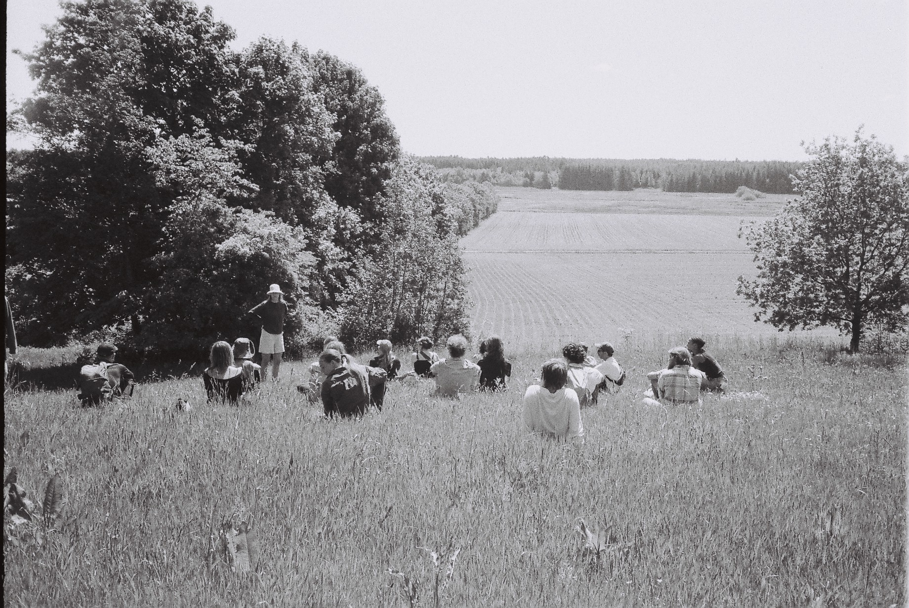
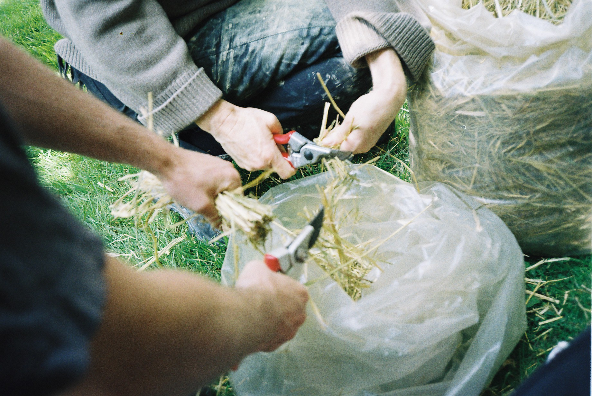
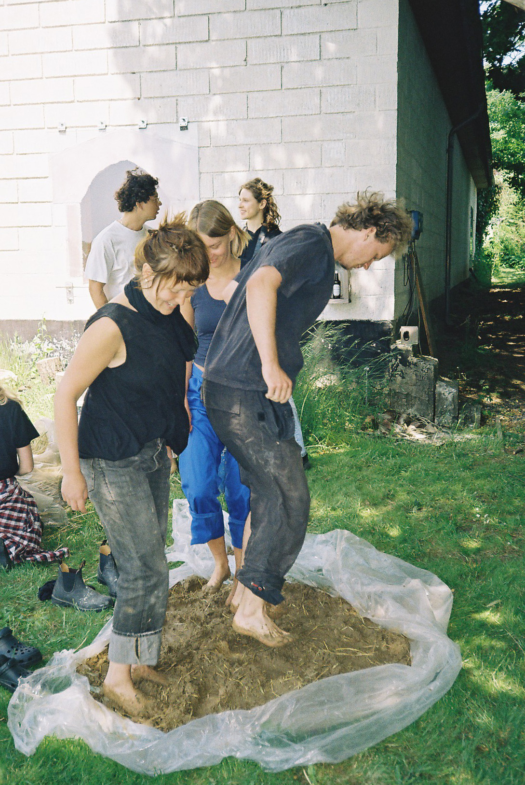
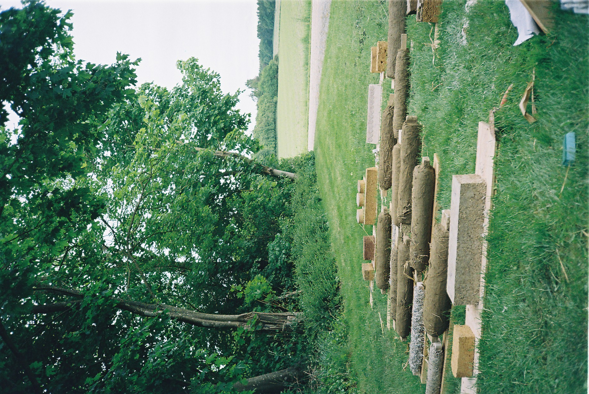

Hosting and teaching together with Torkild Heland Kleppe, Lærke Lyhne, Djernes & Bells, Lasse Koefoed (Ler & Liv)
27.05.26 - 31.05.26, ORBI, Jels (DK)

The Shortest, Simplest Way between Earth, the Hands and the Mouth link
Hosting and teaching together with Torkild Heland Kleppe, Lærke Lyhne, Djernes & Bells, Lasse Koefoed (Ler & Liv)
27.05.26 - 31.05.26, ORBI, Jels (DK)
The house of ORBI

Context-crete

Landscape walk with Janne Dinesen

Shaping clay into clay masks

Shaping clay into clay masks

cutting plant fibers

cutting plant fibers

Context-crete elements